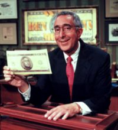

|
Stanford Review - Archive - Volume XXV - Issue 3
Ralph Nader Criticizes "Corporate Control" In Stanford Speech
Ralph Nader condemned corporate control of the government and media in a campaign speech at Memorial Auditorium on October 22. Speaking to a near capacity crowd, he addressed issues ranging from sweatshop labor to space exploration.
.....Full story.....by Matthew Barrett
Bush. Bush. Bush. Bush. Bush.
Ben Stein Campaigns For The Governor

Typically, most Stanford students only get to see Ben Stein on his Comedy Central game show, Win Ben Stein's Money. However, on Thursday, October 19, Mr. Stein appeared at the Manzanita Park courtyard. Mr. Stein held the event not to give away money, but rather to try to convince students to vote for Texas Governor George W. Bush in the upcoming presidential election.
.....Full story.....by Kurt Berglund
|
A Note From Bob
One afternoon at the beginning of this quarter, I dug out a Bush 2000 button from the primaries and put it on the corner of my door. That evening, while I was working on homework in my room, there came a knock at my door. When I opened it, I saw about six people clustered around my door.
"Is that your Bush button?" they asked.
"Yes," I said.
"Are you ... serious?"
Well, I was. But somehow I think that there's not going to be much Stanford turnout for Bush.....Full story
An Interview With Condoleezza Rice
TSR: Has the election played out as you expected?
Ms. Rice: Yes. It is playing out as I expected - very close, state by state. I've stopped watching the national polls; I just watch the state by state polls to see what's going on there.
Cut version
Uncut version
|
John McCarthy, Computer Science Pioneer
The Sustainability Of Human Progress
Humanity has progressed over hundreds of thousands of years, but until about the seventeenth century, progress was a rare event. There were novelties but a person would not expect a whole sequence of improvements in his lifetime. Since then scientific progress has been continual, and in the advanced parts of the world, there has also been continued technological progress. Therefore, people no longer expect the world to remain the same as it is.
.....Full story
The Republican Philosopher King
 "One of you -- one of you -- is about to be elected the leader of the single most powerful nation in the world -- economically, financially, militarily, diplomatically, you name it," stated moderator Jim Lehrer at the beginning of the second presidential debate. "Have you formed any guiding principles for exercising this enormous power?" George W. Bush's and Al Gore's answers to this question reveal a difference in political philosophy that underlies the rest of this campaign's programs, politicking, and posturing. Mr. Bush believes in the American people; Mr. Gore believes in American government.
.....Full story.....by Scott Rasmussen
"One of you -- one of you -- is about to be elected the leader of the single most powerful nation in the world -- economically, financially, militarily, diplomatically, you name it," stated moderator Jim Lehrer at the beginning of the second presidential debate. "Have you formed any guiding principles for exercising this enormous power?" George W. Bush's and Al Gore's answers to this question reveal a difference in political philosophy that underlies the rest of this campaign's programs, politicking, and posturing. Mr. Bush believes in the American people; Mr. Gore believes in American government.
.....Full story.....by Scott Rasmussen
The Libertarian Alternative
The "major parties" have offered you a choice this year. Do you want tax cuts that endorse behaviors Democrats like, or tax cuts that endorse behaviors Republicans like? Do you want the Internet filtered to eliminate content the Republicans find offensive or to eliminate content the Democrats find offensive? Should George W. Bush tell you how to live your life, or should it be Al Gore who does that?
.....Full story.....by Henry Towsner
"History Will Judge": Rice, Glenn, And Kennedy Speak
In the 1960's there was a sense of dedication to public service that some believe is difficult to find today. An all-star panel assembled during the alumni weekend, including Mercury astronaut and Senator John Glenn and former Stanford University provost Condoleezza Rice, sought to answer some of the difficult public service and leadership questions that face America.
.....Full story.....by David Myszewski
News Briefs
Take a look at recent events that have happened around campus and the political scene.
Best of the Web
The Best of the Web takes a look at conservative Internet sites. This week we look at Voter.com.
Election Roundup
Catch up on what has happened recently in the presidential election.
Smoke Signals
The Chief congratulates Hennessy on his recent promotion to president. But he's got some thoughts on the suggestions he's heard for Hennessy's first year.
The Last Page
Al Gore's Cabinet-to-be
Page last modified on Wednesday, 01-Mar-2006 23:54:00 MST.
|